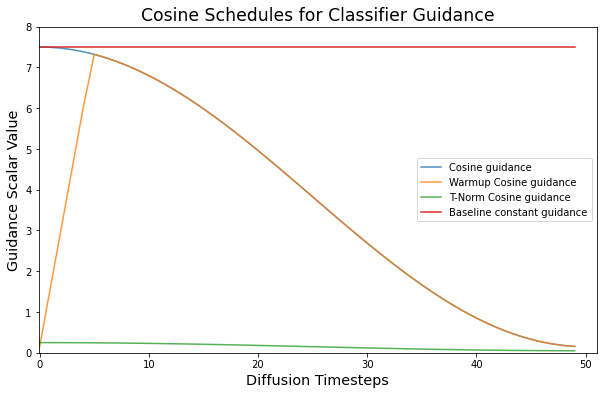
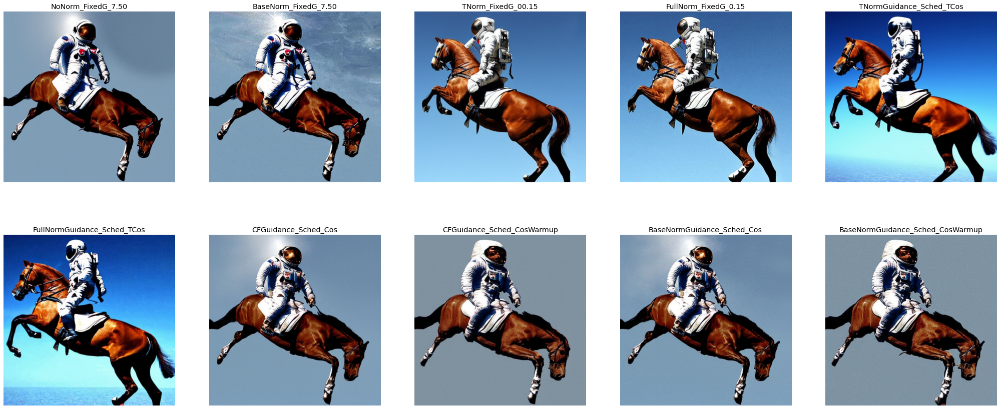
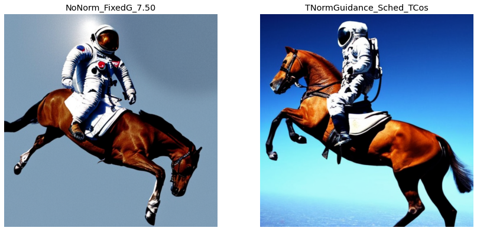
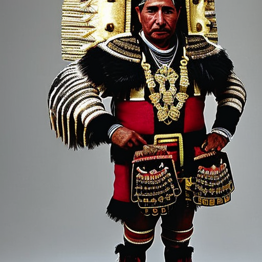

Intro to normalizing and scheduling Classifier-free Guidance
diffusion
classifier-free guidance
deep learning
Author
enzokro
Published
November 13, 2022
Changing the Classifier-Free Guidance parameter during diffusion.
Introduction
This notebook covers the results of dynamically changing the guidance parameter during Classifier-Free Guidance (CFG). Most notably, we create a GuidanceTfm class so that others may easily import these ideas and start experimenting.
Background
We build on a great series of discussions on the fast.ai forums about Classifier-Free Guidance. Some of the users involved were: (please let me know if I missed anyone):
In these talks, two two ideas came up for better Guidance:
Normalizing the latents.
Scheduling the guidance scalar value.
To see why these are good ideas, let’s quickly recap how Classifier-free Guidance works.
Classifier-free Guidance overview
Classifier-free Guidance is a way of steering the outputs of Diffusion models to better align with a given input. It is a key aspect of how we are able to type in a text prompt and get back a relevant, generated image.
CFG was needed because, by default, a Diffusion model starts from pure noise and randomly “walks” to unearth an image. Classifier-free Guidance can instead align the output according to a known, specific input. This known input is usually a meaningful piece of context like a sentence, or a segment of speech, or even another image.
In summary: Instead of randomly walking to generate random images, CFG allows Diffusion models to create targeted outputs.
CFG Formula
CFG updates the unconditioned latents to better match the conditional inputs as follows:
We can think of this equation as a type of moving average. To be more specific, the terms are:
Equation Term
Description
\(\epsilon(x)\)
Unconditioned noise prediction
\(\epsilon(x\ |\ y)\)
Conditional noise prediction
\(G\)
Guidance scaling factor
\(\hat{\epsilon}(x\ |\ y)\)
The final, guided prediction.
As several people have noticed, this update is not balanced. The reason for the unbalance is that \(G\) is usually a large, fixed scalar. For example the default \(G\) in Stable Diffusion pipelines is \(G = 7.5\).
This brings up two questions:
Does a large \(G\) make the vectors too different?
Should \(G\) be a fixed constant throughout the entire diffusion process?
Fahim compiled the forum’s answers to these questions in this notebook. His work compares both different normalizations and schedules for the Guidance parameter.
At first glance, it seems that both normalizing and scheduling the diffusion parameter improves the generated images. These better images are achieved for “free”, in the sense that we didn’t need any fine-tuning or new data.
Let’s take a look at some of the details and benefits of a dynamic guidance parameter.
Note
As Ben Poole points out in Jeremy’s twitter thread, these ideas are not new on their own.
Our normalizations are similar in spirit to the Dynamic Thresholding in the Imagen paper.
Normalizing the guidance
This notebook explores two types of normalization we call BaseNorm and T-Norm:
BaseNorm: Normalize the entire prediction by the ratio of the conditioned and unconditioned norms. \[\hat{\epsilon}(x \ |\ y)_\text{BaseNorm} = \hat{\epsilon}(x \ |\ y)\cdot \frac{\|\epsilon(x)\|}{\|\epsilon(x \ |\ y)\|}\]
T-Norm: Normalize the difference of the conditioned and unconditioned predictions. \[\hat{\epsilon}(x \ |\ y)_\text{TNorm} = \epsilon(x) + G\ \frac{\epsilon(x \ |\ y) - \epsilon(x)}{\|\epsilon(x \ |\ y) - \epsilon(x)\|\cdot \|\epsilon(x)\|}\]
Scheduling the guidance
In standard CFG the guidance scaling value is fixed. But since the final and initial images are so different, should we expect that the same value is optimal for the entire time?
To explore this question we can borrow from Neural Network optimizers. Specifically, our idea of a “guidance schedule” is based on the popular schedules for learning rates.
This notebook explores two new schedules for the CFG parameter \(G\):
Cosine
Cosine with Warmup.
Combining the changes
The natural idea is to combine these approaches: we should both normalize and schedule \(G\).
After exploring each change in isolation we combine them to see their joint effects.
Coding Setup
Python imports
First we import the python, PyTorch, and HuggingFace modules that we need. We also use the timm library for its built-in Cosine schedules.
2022-11-20 19:51:47.940762: I tensorflow/stream_executor/platform/default/dso_loader.cc:53] Successfully opened dynamic library libcudart.so.11.0
Prompt for image generations
We use the following prompt to test our guidance changes:
“a photograph of an astronaut riding a horse”
This is the same prompt folks used in the forums. It seems like a good, simple starting point for future runs.
# the input prompt for diffusionprompt ="a photograph of an astronaut riding a horse"
Picking a Diffusion model
We also have to pick a Diffusion model. Some possible options are:
stable-Diffusion-v1-4 from CompVis.
stable-Diffusion v1-5 from Runway.ml.
Here we use the Stable Diffusion v1-4 model from CompVis.
But it is worth mentioning that this code will work with any Diffusion model name on the HuggingFace hub.
# set the diffusion modelmodel_name ="CompVis/stable-diffusion-v1-4"# "runwayml/stable-diffusion-v1-5"
Utility functions.
Next we define some helper functions.
These helpers create the text embeddings, convert latent features into images, and plot the decoded images. All of these functions are directly from Fahim’s notebook.
def text_embeddings(prompts, maxlen=None):"Extracts text embeddings from the given `prompts`." maxlen = maxlen or tokenizer.model_max_length inp = tokenizer(prompts, padding="max_length", max_length=maxlen, truncation=True, return_tensors="pt")return text_encoder(inp.input_ids.to(device))[0]def image_from_latents(latents):"Scales the diffusion `latents` and turns them into a PIL Image."# scale and decode the latents latents =1/0.18215* latentswith torch.no_grad(): data = vae.decode(latents).sample[0]# Create PIL image data = (data /2+0.5).clamp(0, 1) data = data.cpu().permute(1, 2, 0).float().numpy() data = (data *255).round().astype("uint8") image = Image.fromarray(data)return imagedef show_image(image, scale=0.5):"Displays the given `image` resized based on `scale`." img = image.resize(((int)(image.width * scale), (int)(image.height * scale))) display(img)return imgdef image_grid(images, rows =1, width=256, height=256, title=None):"Display an array of images in a nice grid, or single row" count =len(images) cols =int(count / rows)if cols * rows < count: rows +=1# Calculate fig size based on individual image sizes px =1/plt.rcParams['figure.dpi'] w = cols * width * px# Add some extra space for the caption/title since that can wrap h = (rows * height * px) + (rows *30* px) fig, axes = plt.subplots(rows, cols, figsize=(w, h))for y inrange(rows):for x inrange(cols): index = y*cols + x ref = axes[x] if rows ==1else axes[y] if cols ==1else axes[y, x] ref.axis('off')if index > count -1:continue img = images[index] txt =f'Frame: {index}'if title isnotNone:ifisinstance(title, str): txt =f'{title}: {index}'elifisinstance(title, List): txt = title[index]# small change for bigger, more visible titles txt ='\n'.join(wrap(txt, width=70)) ref.set_title(txt, fontsize='x-large') ref.imshow(img) ref.axis('off')
Splitting the Diffusion pipeline.
To test our hypotheses we need to change the parameter \(G\) during diffusion.
That means we need more control than what is available via HuggingFace’s pipeline API.
We can achieve this finer control by separately loading each piece of the Stable Diffusion pipeline. Then, we can use these pieces to write our own image generation loop.
The function get_sd_pieces() returns the following pieces for a given Diffusion model:
Tokenizer.
Text Encoder.
Variational Auto-Encoder (VAE).
U-Net.
Sampler.
Note: We are using a different \(\text{VAE}\) from stability.ai that was fine-tuned for more steps.
def get_sd_pieces(model_name, dtype=torch.float32):"Loads and returns the individual pieces in a Diffusion pipeline."# create the tokenizer and text encoder tokenizer = CLIPTokenizer.from_pretrained( model_name, subfolder="tokenizer", torch_dtype=dtype) text_encoder = CLIPTextModel.from_pretrained( model_name, subfolder="text_encoder", torch_dtype=dtype).to(device)# we are using a VAE from stability that was trained for longer than the baseline vae = AutoencoderKL.from_pretrained("stabilityai/sd-vae-ft-ema", torch_dtype=dtype).to(device)## NOTE: we can also use these vae from Stability that were trained for even longer#vae = AutoencoderKL.from_pretrained("stabilityai/sd-vae-ft-mse", torch_dtype=dtype).to(device)# build the unet unet = UNet2DConditionModel.from_pretrained( model_name, subfolder="unet", torch_dtype=dtype).to(device)# enable unet attention slicing slice_size = unet.config.attention_head_dim //2 unet.set_attention_slice(slice_size)# build the scheduler scheduler = LMSDiscreteScheduler.from_config(model_name, subfolder="scheduler")return ( tokenizer, text_encoder, vae, unet, scheduler, )# load the individual diffusion piecespieces = get_sd_pieces(model_name, dtype=torch.float16)(tokenizer, text_encoder, vae, unet, scheduler) = pieces
Cosine schedules from timm
We test two different schedules for \(G\):
Cosine schedule.
Cosine with Warmup.
The HuggingFace pipeline uses 50 diffusion timesteps by default. To keep things comparable, we also use 50 steps.
The Cosine schedule starts from the default \(G_\text{max} = 7.5\). It then slowly works down to a minimum of \(G_\text{min} = 0.15\).
We also make a schedule with Warmup. Warmup means that \(G\) first starts low, then linearly works its way up to \(G_\text{max}\). Only then does it start decreasing back down to \(G_\text{min}\). As a starting point, we warmup during the first 10% of the Diffusion process (aka during the first 5 steps).
For T-Norm, we use a slightly different Cosine schedule with smaller values. We need this because a large \(G\) with T-Norm makes the problem we are trying to solve (\(G\) too large) even worse. The smaller T-Norm values also align much better with how we typically think about mixing or moving averages.
# parameters for CFG cosine schedulesmax_g =7.5min_g =0.15num_steps =50# warmup from the minimum over 10% of the processwarmup_ratio =0.10warmup_start = min_g# cosine schedule parameterscos_params = {'max_val': max_g,'num_steps': num_steps,'min_val': warmup_start,'warmup_fact': 0,}# warmup-cosine parameterswarmup_cos_params = {'max_val': max_g,'warmup_start': warmup_start,'num_steps': num_steps,'min_val': warmup_start,'warmup_init_val': warmup_start,'warmup_fact': warmup_ratio,}# cosine schedule for T-Norm guidancet_scale_params = {'max_val': 0.25,'num_steps': num_steps,'min_val': 0.05,}
We use the Cosine scheduler in timm for convenience.
That means we need a bit of overhead code. Mainly, we need a dummy PyTorch optimizer and module.
# create dummy modelmodel = torch.nn.Linear(1, 1)# arguments for the dummy optimizerdefault_opt_args = {'opt': 'adam','momentum': 1.0,'weight_decay': 0,}def get_cos_sched(**sched_params):"""Creates a Cosine schedule using the `timm` library."""# number of diffusion iterations num_steps = sched_params['num_steps'] min_val, max_val = sched_params['min_val'], sched_params['max_val']# compute number of warmup steps, if givenif sched_params.get('warmup_fact'): warmup_t =int(num_steps * sched_params['warmup_fact']) warmup_init_val = sched_params.get('warmup_init_val', 0)else: warmup_t = warmup_init_val =0# get the dummy optimizer for the timm scheduler opt_args = SimpleNamespace(lr=max_val, **default_opt_args) optimizer = create_optimizer(opt_args, model)# create the cosine schedule lr_sched = CosineLRScheduler( optimizer, t_initial=num_steps, lr_min=min_val, warmup_t=warmup_t, warmup_lr_init=warmup_init_val, )# extract and return the CFG values at each iteration cfg_per_step = [lr_sched.get_epoch_values(step)[0] for step inrange(num_steps)]return cfg_per_step
Now that we have both the parameters and builder functions for Cosine schedules, we can create them:
# baseline cosine guidance schedulecos_g = get_cos_sched(**cos_params)# cosine schedule with warmup warmup_cos_g = get_cos_sched(**warmup_cos_params)# cosine schedule with smaller G values for T-Normt_scale_cos_g = get_cos_sched(**t_scale_params)
Plotting the Cosine schedules
Let’s plot these new schedules to compare them against the previous, constant guidance.

The Guidance Transform class
Here we create the Guidance Transformation class, GuidanceTfm. This class is heavily inspired by other Transforms in the fast.ai library.
GuidanceTfm has an encode() method that takes the following inputs:
encode Argument
Description
\(\epsilon(x)\)
Unconditioned latents
\(\epsilon(x\ |\ y)\)
Conditional latents
\(\text{idx}\)
The current diffusion step
For convenience we call the unconditioned latents “\(\text{u}\)” and the conditioned latents “\(\text{t}\)”.
The base class applies a standard CFG update. However, there are also methods to pre and post process the latents. The goal of these other methods is to easily try different and custom normalizations. For example, we can implement all of our normalization ideas with these methods.
Lastly, GuidanceTfm takes one initialization parameter: schedules. This is a dictionary that maps a parameter name to an array-like, indexable sequence of values. This sequence is how we tap in to the scheduled \(G\) value at timestep \(\text{idx}\). And if we ever want to include or schedule other parameters, we can add them to schedules and access them in any of the encode() functions.
class GuidanceTfm:"Baseline Classifier-free Guidance for Difussion." name ="CFGuidance"def__init__(self, schedules, *args, **kwargs):self.schedules = schedulesdef encode(self, u, t, idx=None):"Applies guidance on `u` and `t` with optional pre/post processing."self.pre_proc(u, t, idx)self.guide(u, t, idx)self.post_proc(u, t, idx)returnself.preddef guide(self, u, t, idx=None):"Mixes latents `u` and `t` based on guidance schedule for `g`."self.pred = u + (self.scheduler('g', idx) * (t - u))def pre_proc (self, u, t, idx=None): passdef post_proc(self, u, t, idx=None): passdef scheduler(self, name, idx):"Gets the scheduled value for parameter `name` at timestep `idx`."returnself.schedules.get(name)[idx]class BaseNormGuidance(GuidanceTfm):"Scales the noise prediction by its overall norm." name ="BaseNormGuidance"def post_proc(self, u, t, idx=None):self.pred =self.pred * (torch.linalg.norm(u) / torch.linalg.norm(self.pred))class TNormGuidance(GuidanceTfm):"Scales the latent mix of `t - u`" name ="TNormGuidance"def guide(self, u, t, idx=None):self.pred = u + (self.scheduler('g', idx) * (t - u)) / torch.linalg.norm(t - u) * torch.linalg.norm(u)class FullNormGuidance(TNormGuidance, BaseNormGuidance):"Applies both Base and T-Norm on the noise prediction." name ="FullNormGuidance"pass
Creating guidance experiments
Now that we have the transforms and schedules, we are finally ready to create some experiments!
Making schedules for GuidanceTfm
We start with the following family of Guidance schedules:
- Constant guidance with \(\left(G = 7.5\right)\)
- Constant guidance with \(\left(G = 0.15\right)\)
- A cosine schedule from \(\left(G = 7.5\right)\) down to \(\left(G = 0.15\right)\)
- A cosine schedule that warms up to \(\left(G = 7.5\right)\) over the first 10% of steps
For the T-Norm experiments, we also define a smaller-valued cosine schedule:
- T-Norm cosine schedule from \(\left(G = 0.25\right)\) down to \(\left(G = 0.05\right)\)
The schedule maps below will be the arguments to our GuidanceTfm instances.
# baseline constant schedules with min and max valuesmax_sched = {'g': [max_g] * num_steps}min_sched = {'g': [min_g] * num_steps}# cosine schedulescos_sched = {'g': cos_g}cos_warmup_sched = {'g': warmup_cos_g}# normalized cosing schedules for T and Full-scale guidancesmall_cos_sched = {'g': t_scale_cos_g}
Recreating the forum ideas
First, let’s recreate the experiment baselines from the forums and Fahim’s notebook.
# stores the guidance experiements to runexpts = {}### RECREATE SCALING RUNS FROM fast.ai FORUM POSTS##################################################################################################baseline = GuidanceTfm(max_sched) # 1) No scaling, guidance fixed to 7.5scale_base_hi_g = BaseNormGuidance(max_sched) # 2) Scale the "whole" updatescale_T_lo_g = TNormGuidance(min_sched) # 3) Scale the update of "t"scale_all_hi_g = FullNormGuidance(min_sched) # 4) Scale everything (steps 2 + 3)# add baselines to the experiment listexpts[f'NoNorm_FixedG_{max_g:.2f}'] = baselineexpts[f'BaseNorm_FixedG_{max_g:.2f}'] = scale_base_hi_gexpts[f'TNorm_FixedG_0{min_g:.2f}'] = scale_T_lo_gexpts[f'FullNorm_FixedG_{min_g:.2f}'] = scale_all_hi_g#################################################
Combining scales and schedules
Next, we leverage our GuidanceTfm class to easily make new experiments.
We create the following:
Default and BaseNorm Guidance with Cosine and Cosine Warmup schedules.
T-Norm and FullNorm Guidance with the smaller T-Cosine schedule.
# group the cosine to run, and their names for plottingname2sched = {'Cos': cos_sched,'CosWarmup': cos_warmup_sched,'TCos': small_cos_sched,}# T-Norm and FullNorm guidance with small T-Cosinenorm_scalers = [TNormGuidance, FullNormGuidance]for scaler in norm_scalers:# step through all cosine schedulesfor name in ['TCos']:# experiment for this (scaling, schedule) pair expt = scaler(name2sched[name])# unique name for this experiment expt_name =f'{scaler.name}_Sched_{name}'# add scaler to lists of experiments expts[expt_name] = expt# Default and BaseNorm guidance with cosine schedules g_scalers = [GuidanceTfm, BaseNormGuidance]for scaler in g_scalers:# step through all cosine schedulesfor name in ['Cos', 'CosWarmup']:# experiment for this (scaling, schedule) pair expt = scaler(name2sched[name])# unique name for this experiment expt_name =f'{scaler.name}_Sched_{name}'# add scaler to lists of experiments expts[expt_name] = expt
Here we print all of the queued experiments:
print("Guidance experiments to run:\n")print('\n'.join(f'{k}'for k,_ in expts.items()))
We are almost there! Now we need a way to actually generate images.
The generate() function below is almost identical to the the StableDiffusionPipeline() from HuggingFace.
We make a few changes to ensure that the initial latents are the same between runs. That means that only the guidance schedule and/or normalization affects the outputs.
# create the shared, initial latentswidth, height =512, 512# grab the initial set of latentsseed =1024torch.manual_seed(seed)init_latents = torch.randn((1, unet.in_channels, height//8, width//8), dtype=unet.dtype, device=device)def generate(prompt, gtfm=None, width=width, height=height, guidance=max_g, steps=num_steps, **kwargs):# make sure we got a guidance functionassert gtfm# prepare text embeddings text = text_embeddings(prompt) uncond = text_embeddings('') emb = torch.cat([uncond, text]).type(unet.dtype)# start from the shared, initial latents latents = torch.clone(init_latents) scheduler.set_timesteps(steps) latents = latents * scheduler.init_noise_sigma# run diffusionfor i,ts inenumerate(tqdm(scheduler.timesteps)): inp = scheduler.scale_model_input(torch.cat([latents] *2), ts)with torch.no_grad(): tf = tsif torch.has_mps: tf = ts.type(torch.float32) u,t = unet(inp, tf, encoder_hidden_states=emb).sample.chunk(2)# run the guidance transform pred = gtfm.encode(u, t, idx=i)# update the latents latents = scheduler.step(pred, ts, latents).prev_sample# decode and return the final latents image = image_from_latents(latents)return image
Let’s save ourselves some work by writing a harness function to automatically store the experiment results:
# store generated images and their title (the experiment name)images, titles = [], []def harness(prompt, gtfm, title=''): img = generate(prompt, gtfm)#print(title)#show_image(img, scale=1) images.append(img) titles.append(title)
Running the guidance experiments.
# run each of the functions with the harnessfor gname, gtfm in expts.items():print(f'Running experiment: {gname}...') harness(prompt, gtfm, title=gname)print('Done.')
Our starting image, the baseline, is in the top-left. All other images are from different Guidance normalizations and schedules.

That’s a lot of images. Thankfully, there is one result that stands out above the rest:
Biggest Improvement: Cosine with T-Norm and FullNorm
There seems to be a consistent gain from using either T-Norm or FullNorm with a Cosine schedule.
The image below compares our baseline to T-Norm and Cosine schedule. We can see:
A more semantically correct horse (it has all of its legs!).
Better details and colors in the background.
The horse’s body is still not quite right, but it’s a marked improvement from the baseline.

Cosine T-Norm vs. Cosine FullNorm
These images are close, and both are better than the baseline. It seems we traded some background quality for subject quality with FullNorm vs. T-Norm.
Conclusion
This notebook recaps a set of discussions on the fast.ai forums about how to improve Classifier-free Guidance.
Two changes were proposed and tested:
- Normalizing the guidance parameter.
- Scheduling the guidance parameter.
A GuidanceTfm class was created to easily leverage these approaches in other runs.
Overall, it seems that a combination of T-Norm and Cosine schedule improves both the details and syntax of generated images.
Given that these improvements are achieved for “free”, with a negligible increase in computation time, and without any external data or fine-tuning, they could be a healthy addition to any existing diffusion process.
More examples
Here is an example from a run using a different prompt:
“a portrait of a great Incan Warlord wearing his ornate ceremonial armor”
With a few Diffusion pipeline changes:
Using Stable Diffusion v1-5 from Runway.ml
Using \(\text{VAE-mse}\) from stability.ai
We again see a huge improvement from using FullNorm with a Cosine schedule.
Baseline
FullNorm with Cosine schedule

This shows that the improvements may not be isolated to v1-4 or any particular \(VAE\)!
Appendix: More comparisons
The gains from other schedules are normalizations are less noticeable.
There are likely still universal gains from normalizing. But with Cosine schedules on their own the results are more mixed.
To drive this point home: there is a lot more exploration left to do for both schedule values and warmups. This notebook is hopefully a good starting point for others to build on!
Original vs. BaseNorm
Here we plot our default image and the result from BaseNorm.
The differences are subtle, but track the general observations from the forums:
- More detail in the backgrounds.
- Better shadowing on subjects.
- Some moderate clarity gains.